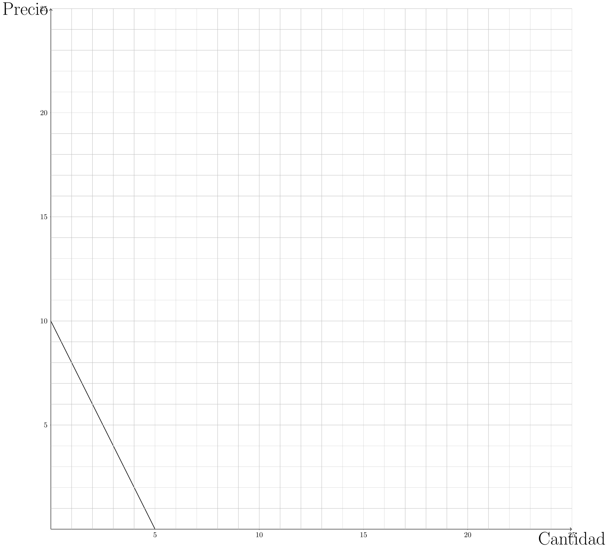
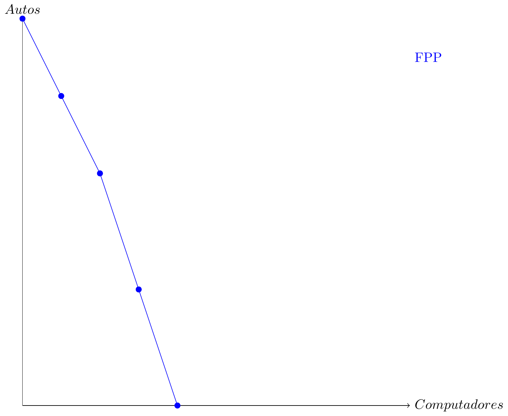
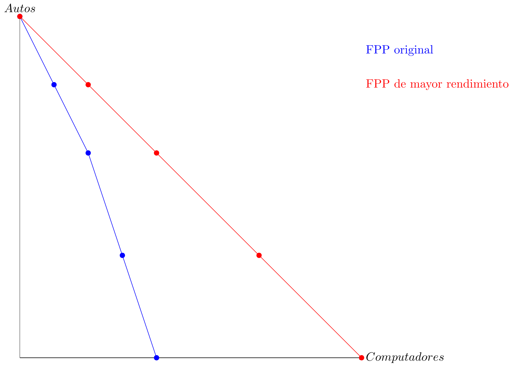
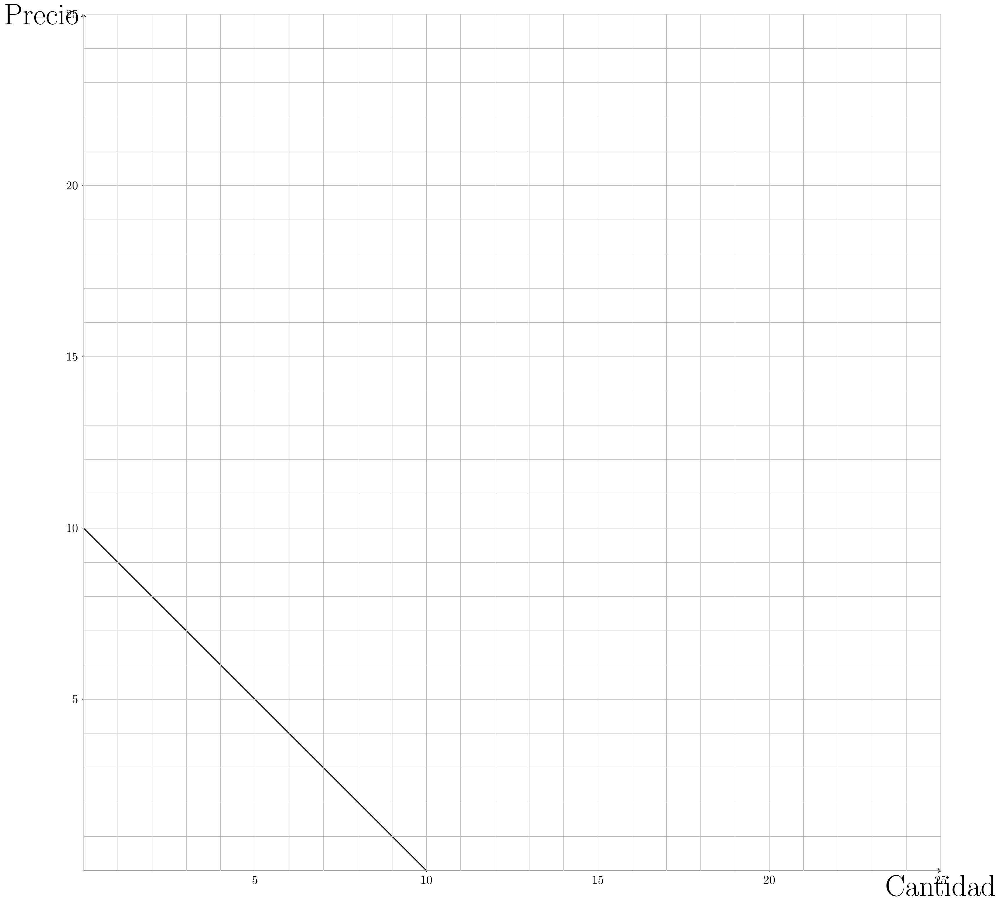
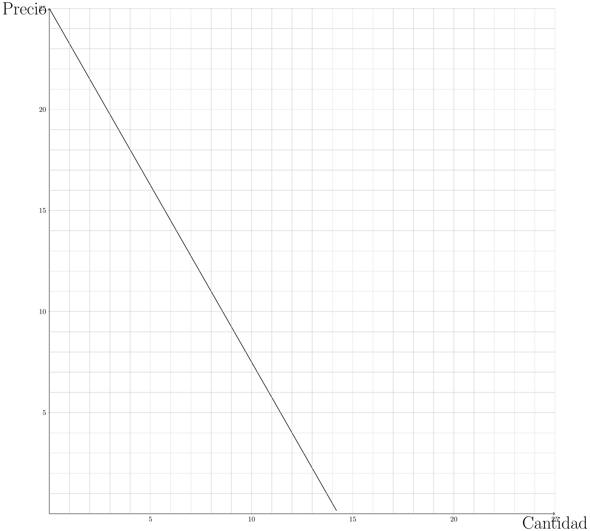

Ayudantía II:
Ejercicio I :
Suponga que la siguiente tabla resume la economía de un país que produce únicamente dos bienes:
| A | B | C | D | E | |
| Computadores | 0 | 1 | 2 | 3 | 4 |
| Autos | 10 | 8 | 6 | 3 | 0 |
Dibujar la FPP.
Si esta economía se encuentra produciendo 1 computador, ¿cuál es el costo de oportunidad de comenzar a producir 4 computadores?
Calcular el costo de oportunidad del punto C al punto D.
¿El rendimiento es creciente, decreciente o constante?
¿Cómo se vería reflejado en la FPP un mejor rendimiento? (mayor producción)
Ejercicio II:
Grafique las siguientes demandas:
\[ P(Q)=\$10 - 1Q \]
\[ P(Q)=\$12 - 2Q \]
\[P(Q)=\$50 - 2.5Q\]
Ejercicio III:
Calcule el precio Demandado (\(P\)) de un bien para una producción de 5 unidades (\(Q=5\)). Usted sabe que si no se producen unidades el precio demandado es de $5000. Adicionalmente, usted sabe que la función de demanda es lineal de la forma: \[P(Q)=a-250Q\]
Calcule la función inversa de demanda para \(P(Q)=a-bQ\)
Asuma una función de demanda igual a \(P(Q)=a-235Q\). Si Usted sabe que 10 unidades se valoran a un precio de 7650, ¿Cuál sería el precio de referencia si no se produce nada?
Ejercicio IV:
Calcule la función demanda de los siguiente gráficos. 1)


RESPUESTAS
Ejercicio I:
- Para graficar la frontera de posibilidades de producción, basta con realizar un gráfico de 2 dimensiones, un bien por eje. Luego completar incorporando los puntos de producción.

Al observar el gráfico o la tabla FPP, se observa si la economía produce 1 computador, esta también produce eficientemente 8 autos. Pero, si aumenta la producción de computadores a 4, no se podría producir autos. Por esto, se concluye que el costo de oportunidad de producir de 1 a 4 computadores significa un costo de oportunidad de 8 autos.
Al igual que el caso anterior, al observar la tabla se ditingue que el costo de oportunidad de pasar de producir 2 computadores a 3, significa una disminución de producción de 3 autos. Por lo que el costo de oportunidad en este caso es de 3 autos.
Para distinguir el rendimiento, se debe entender si el costo de oportunidad aumenta, disminuye o es constante durante los distintos puntos de la FPP.
| A | B | C | D | E | |
| Computadores | 0 | 1 | 2 | 3 | 4 |
| Autos | 10 | 8 | 6 | 3 | 0 |
| Costo de Oportunidad | 0 | 2 | 2 | 3 | 3 |
| Bienes totales | 10 | 9 | 8 | 6 | 4 |
Como se observa en la tabla, el valor de costos de oportunidad aumenta mientras que los bines totales disminuye. En conclusión, existe un rendimiento decreciente.
- Se vería reflejado al existir una menor pendiente vertical.

Ejercico II:



Ejercicio III:
Tenemos que en el caso \(Q=0\) el valor de \(P(Q)=a=5000\), entonces con esto tenemos la función:
\[ P(Q)=5000-250Q \]
Ahora evaluamos \(P(5)\) y esto nos da: \[ P(5)=5000-250\cdot 5 \] \[ P(5)=5000-1250 \] \[ P(5)=3750 \]
La función inversa de la demanda es la función inversa de \(Q(P)\), por lo que la función inversa de \(P(Q)=ab-bQ\) es esta misma.
El precio de referencia cuando no se produce nada es en este caso el valor de ``\(a\)’’, para calcularlo tenemos que plantear la ecuación del enunciado:
\[ 7650=a-235\cdot 10 \] \[ 7650=a-2350 \]
\[ 7650+2350=a \] \[ a=10000 \]
Es decir el precio de referencia es equivalente a $10.000.
Ejercicio IV: 1)
\[ P(Q)=5-0.2Q \]
\[ P(Q)=20-3Q \] 3)
\[ P(Q)=10-2Q \]